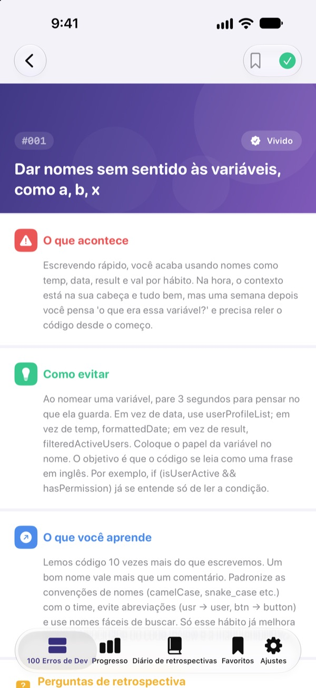
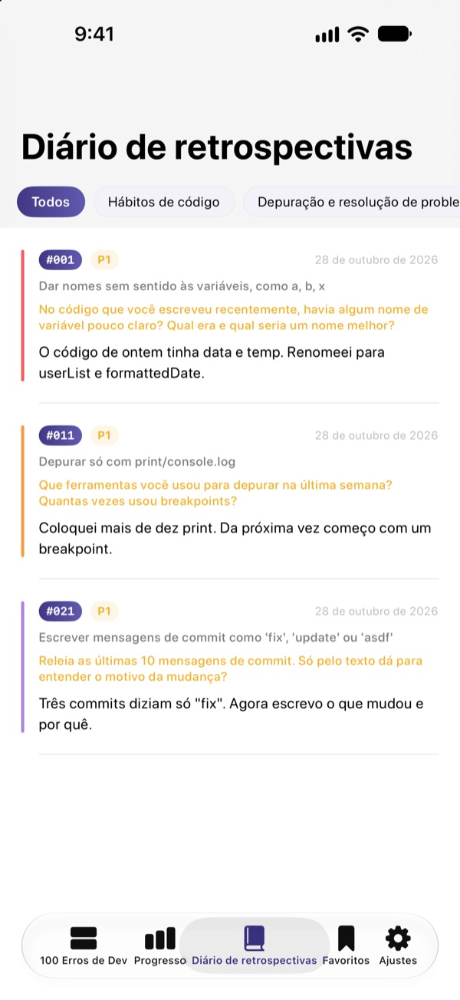
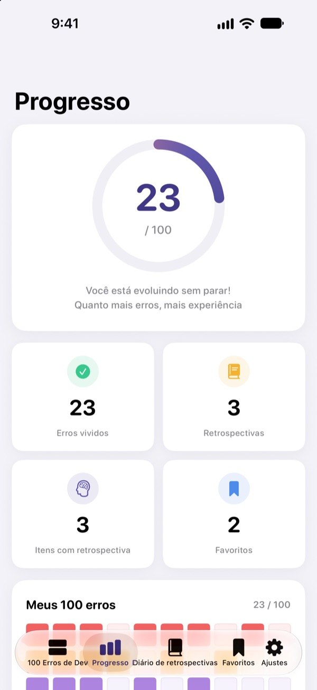

Conheça os erros
antes que doam
Os 100 erros que devs júnior mais cometem, num só lugar. Em cada um você lê o que acontece, o que fazer e o que aprende, e responde uma pergunta de retrospectiva para não cair no mesmo erro duas vezes.
Os 30 primeiros erros são grátis. Funciona no iPhone, iPad e Mac.
Abra um erro
Estes são os 10 erros da primeira categoria gratuita, exatamente como no app. Marque como Vivido os que já aconteceram com você.
O mesmo comentário no code review de novo?
Nomes de variáveis sem sentido, funções de 200 linhas, código copiado e colado. Todo sênior já passou por isso, mas a gente só descobre quando tropeça. O 100 Erros de Dev Júnior mostra esses erros antes e faz você refletir sobre o próprio trabalho para não repeti-los.
O que acontece, o que fazer, o que aprender
Cada erro é explicado em três partes: o que acontece, o que fazer e o que você aprende com ele.
Dez categorias, de hábitos de código a segurança e desempenho, só com os erros que se repetem de verdade nos times.

Perguntas de retrospectiva para fixar
Cada erro vem com 4 perguntas de retrospectiva, 400 no total. Responda pensando nos seus projetos e o que você leu vira experiência.
Suas respostas ficam no diário de retrospectivas, separadas por categoria, para reler quando quiser.

Veja o quanto você evoluiu
Marque os erros que você já viveu e o progresso cresce por categoria e no total. Salve nos favoritos o que quiser rever.
Tudo sincroniza pelo iCloud entre iPhone, iPad e Mac.

Comece em três passos
- 1
Escolha uma categoria
Hábitos de código, depuração e controle de versão estão liberados de graça.
- 2
Leia e marque
Toque em Vivido nos erros que você já cometeu.
- 3
Faça a retrospectiva
Escreva uma resposta, mesmo curta. Ela vai para o seu diário de retrospectivas.
As 10 categorias
- Hábitos de código
- #001–#010 · Grátis
- Depuração e resolução de problemas
- #011–#020 · Grátis
- Controle de versão e colaboração
- #021–#030 · Grátis
- Design e arquitetura
- #031–#040 · PRO
- Testes e qualidade
- #041–#050 · PRO
- Aprendizado e crescimento
- #051–#060 · PRO
- Comunicação e colaboração
- #061–#070 · PRO
- Deploy e operação
- #071–#080 · PRO
- Segurança e dados
- #081–#090 · PRO
- Desempenho e otimização
- #091–#100 · PRO
Cada categoria tem 10 erros, e cada erro tem 4 perguntas de retrospectiva.
30 grátis. Todos os 100 com PRO.
Grátis
- As 3 primeiras categorias, 30 erros
- As 120 perguntas de retrospectiva delas
- Checklist, diário de retrospectivas, progresso e favoritos
- Sincronização pelo iCloud (iPhone, iPad, Mac)
100 Erros de Dev Júnior PRO
- As outras 7 categorias, mais 70 erros (#031–#100)
- Mais 280 perguntas de retrospectiva
- Todas as próximas atualizações de conteúdo
Assinatura mensal, anual (até 50% mais barata que a mensal) ou compra única vitalícia.
Nenhum dado pessoal coletado, sem ferramentas de análise e sem anúncios.
Perguntas frequentes
O que é grátis?
Todos os 30 erros e suas perguntas nas categorias Hábitos de código, Depuração e resolução de problemas e Controle de versão e colaboração. Checklist, diário de retrospectivas, progresso, favoritos e sincronização pelo iCloud também são grátis.
Como uso o PRO em outro aparelho?
Entre com o mesmo ID Apple e toque em Restaurar compras na tela de assinatura.
Como cancelo a assinatura?
Quando quiser, em Ajustes › ID Apple › Assinaturas. A assinatura renova automaticamente se não for cancelada pelo menos 24 horas antes do fim do período atual. A compra vitalícia é paga uma vez só.
Meus dados não sincronizam entre aparelhos.
Confira se todos os aparelhos estão conectados ao iCloud com o mesmo ID Apple e se o iCloud está ativado para este app em Ajustes. A sincronização também precisa de internet.
Como apago tudo?
Toque em Apagar todos os dados nos ajustes do app. Marcações, respostas e favoritos são apagados, e não dá para desfazer.
Em quais aparelhos funciona?
iPhone, iPad e Mac. O PRO é liberado em todos os aparelhos com o mesmo ID Apple.
Meus dados são enviados para algum lugar?
Não. Suas marcações e respostas ficam só nos seus aparelhos e no seu próprio iCloud. O app não coleta dados pessoais e não tem ferramentas de análise nem anúncios.
Dúvidas ou sugestões? Escreva para leeo@kakao.com.